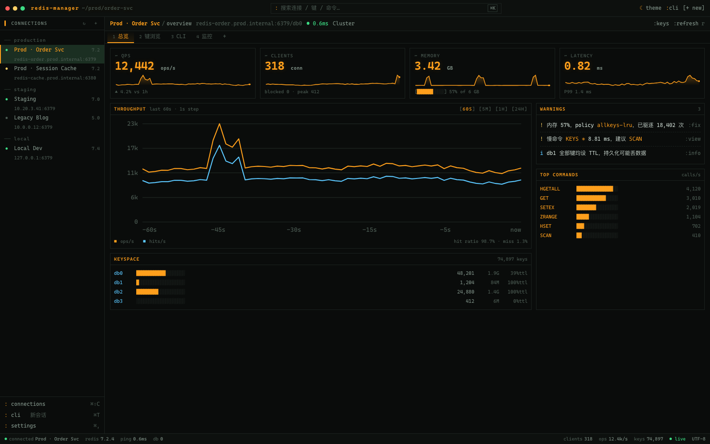
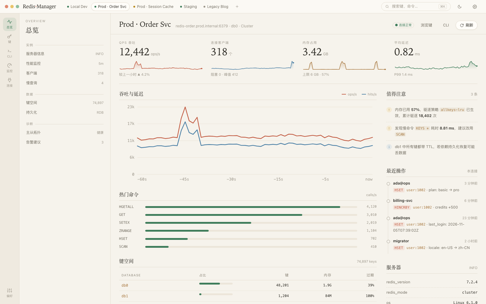
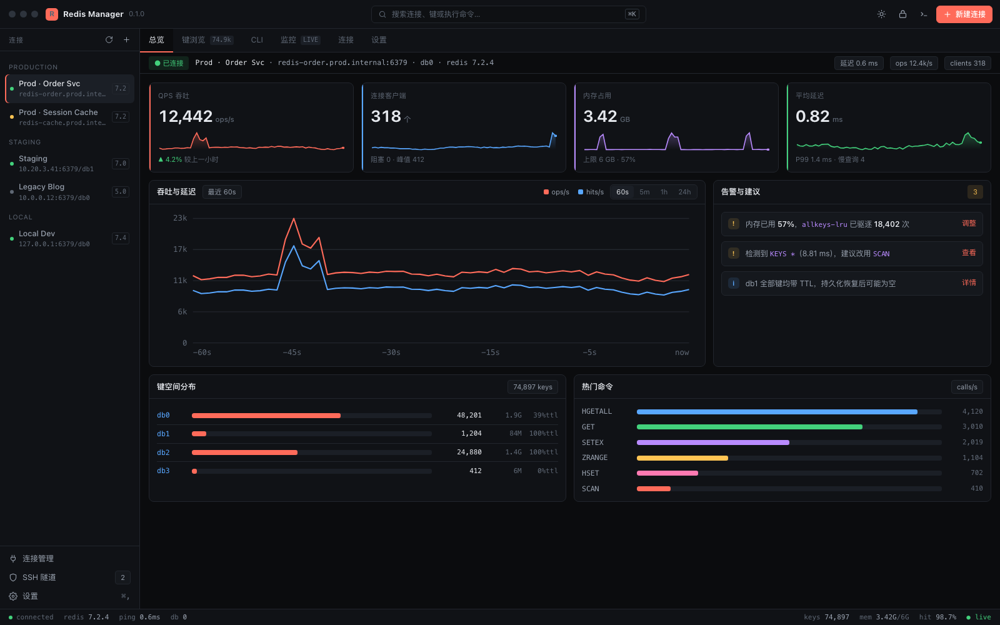
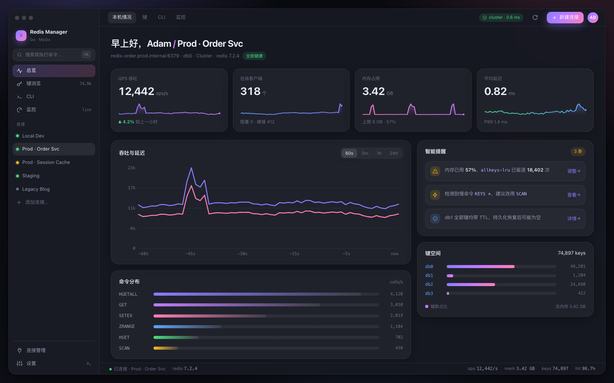

Redis Manager · UI 原型
四种风格，同一套功能
点击卡片进入可交互原型。每个原型都支持 ?page=overview|browser|cli|monitor|connections|settings 深链，点击卡片上的页面按钮可直达对应页面。功能、信息架构完全一致，差别只在视觉语言和空间组织。

A · 终端极客
Terminal
等宽字体 + 琥珀色荧光，ASCII 进度条与方框，编辑器式标签、状态栏。（第 1 版）
- 适合重度 redis-cli 用户
- 信息密度最高
- 可一键切换终端/原生风
总览键浏览CLI监控

B · 雅致工具
Craft
暖纸色底、衬线标题、细线与大留白，三栏“目录 · 详情”结构，优雅克制。
- 适合产品化面向团队
- 阅读性强、不易疲劳
- 时间线呈现操作历史
总览键浏览CLI监控

C · 数据工作台
Console
深色高密度仪表盘，珊瑚色点缀、等宽数字、⌘K 命令面板、锁屏页。最接近“专业工具”。
- 适合 DBA / 后端工程师
- 一屏看到更多信息
- 安全：锁屏 + 只读
总览键浏览CLI监控
⌘K锁屏

D · 轻盈玻璃
Airy
悬浮大圆角窗口、柔和渐变与光晕、大字号 KPI，卡片式布局，轻盈现代。
- 适合面向普通开发者
- 第一眼最友好
- 渐变让数据更“有温度”
总览键浏览CLI监控
⌘K